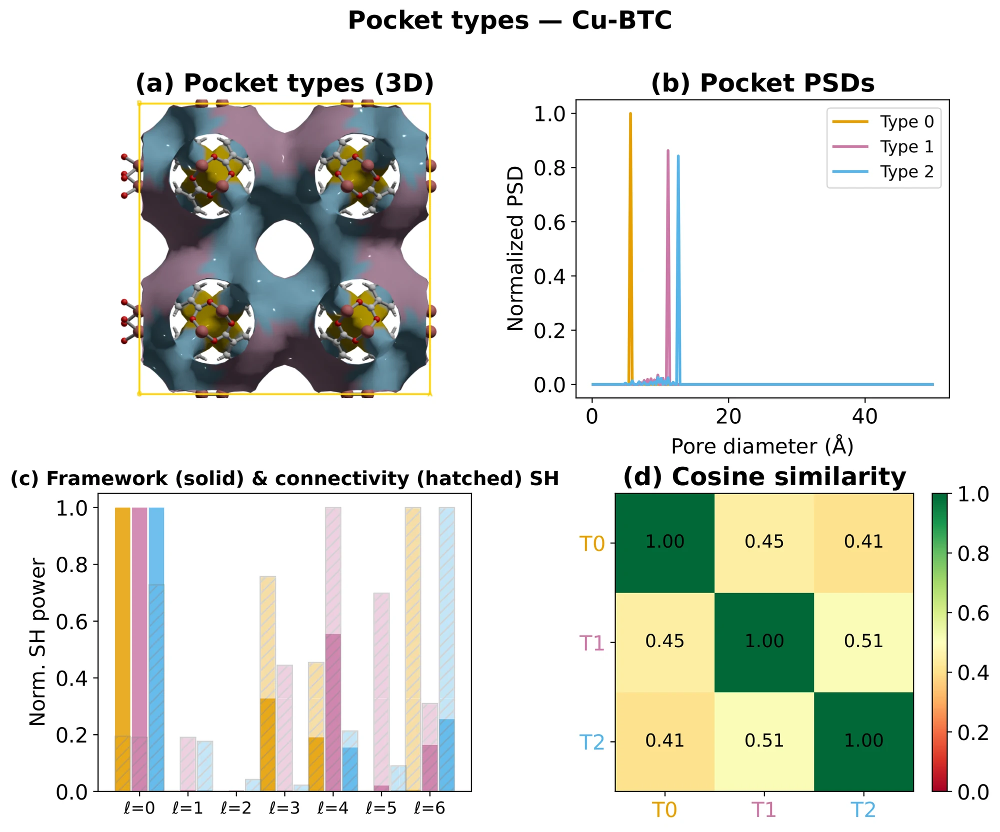
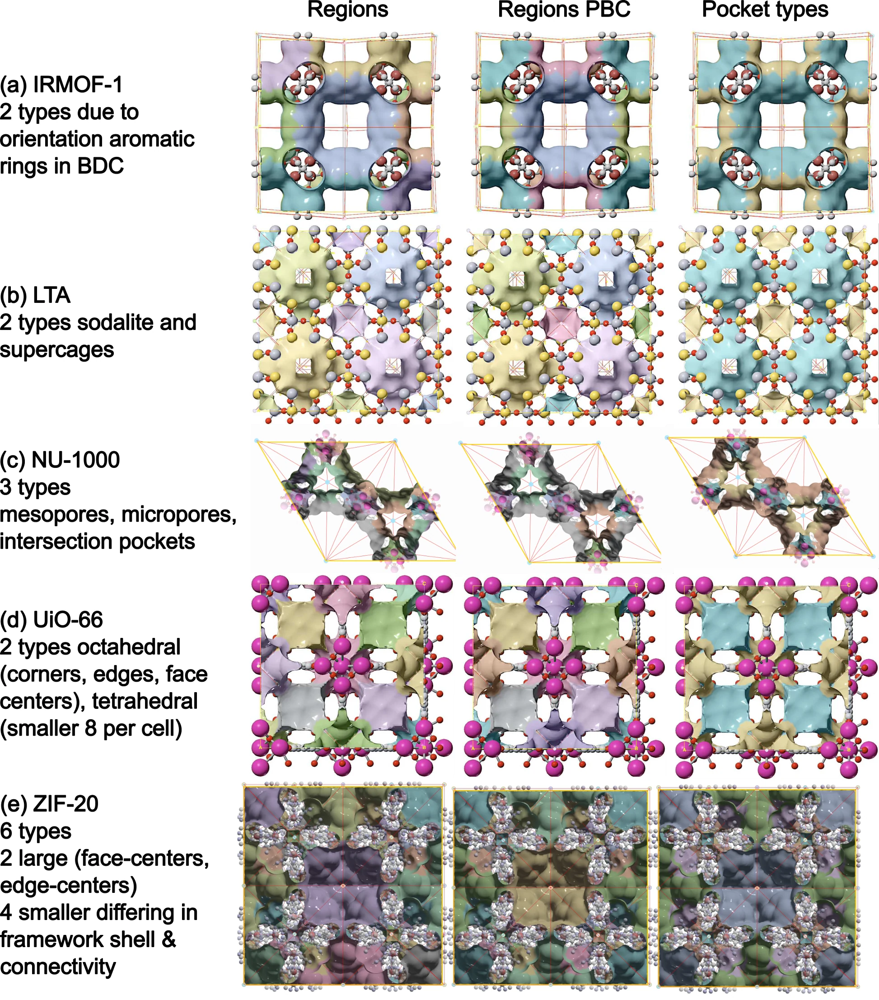

flowchart LR
A[CIF] --> B[dgrid]
B --> C[periodic segmentation]
C --> D[pocket PSDs]
D --> E[env_cluster typing]
E --> F["typed.n_types, typed.type_summary"]
Pocket Type Detection
Classify pore pockets into chemically meaningful types with env_cluster multi-modal fingerprinting


Overview
Once you have a periodic segmentation, the next question is which pockets are the same kind of pocket? — i.e. how many pocket types does the MOF contain?
This is more than a clustering exercise. Chemically distinct adsorption sites (e.g. small tetrahedral cages vs large octahedral cages in UiO-66, or window families of slightly different aperture in ZIF-20) need to be:
- Stable under reasonable numerical choices (grid spacing, VDW table).
- Physically interpretable — a “type” should correspond to a real cavity family.
- Robust to over-segmentation — watershed often splits one cage into multiple fragments; these must collapse into one type.
env_cluster is the default (and recommended) pocket-typing method. It uses multi-modal fingerprinting: it seeds bands from the peak probe radius \(r_{max}\) and then merges adjacent bands whose rotation-invariant fingerprints agree. The fingerprint has three channels: size (pocket PSD), a SOAP-like framework environment, and pore connectivity.
Prerequisites
- A working
mofographyinstall (uv pip install -e .). - The Quick Start tutorial — read it first for the segmentation basics.
Imports
Show code
import mofography as mgr
from ase.io import read
import numpy as npStep 1: Load a Structure
IRMOF-1 is a clean test case: two cage-size families in one cubic cell.
Show code
atoms = read("IRMOF-1.cif")
print(f"Atoms: {len(atoms)}")
print(f"Cell: {atoms.cell.cellpar()[:3].round(2)} Å")Atoms: 424
Cell: [25.83 25.83 25.83] ÅStep 2: Compute the Distance Grid
The dgrid is the foundation: a per-voxel radius of the largest probe sphere that fits. Every downstream feature is derived from it.
Show code
spacing = 0.5 # Å — the canonical default for pocket typing
dgrid = mgr.dgrid_from_atoms_rust(atoms, spacing=spacing)
print(f"Grid shape: {dgrid.shape} ({dgrid.size:,} voxels)")
print(f"Void max: {dgrid.max():.2f} Å")Grid shape: (52, 52, 52) (140,608 voxels)
Void max: 7.54 ÅDon’t use
dgrid_from_atoms_gpuordgrid_from_atoms_cpuhere. They are deprecated and known to mis-handle non-orthorhombic cells. The*_rustbackends are correct for all cell types.
Step 3: Periodic Segmentation (Single Call)
do_periodic_segmentation_rust gives you the maxima, regions, PBC grouping, and connections in one call.
Show code
dgrid_f32 = dgrid.astype(np.float32)
seg = mgr.do_periodic_segmentation_rust(
dgrid_f32, atoms,
mask_thickness=0.05,
h=0.2,
min_distance=1.5,
threshold_abs=1.5,
spacing=spacing,
compute_connections=True,
watershed_backend="rust_det",
disable_tqdm=True,
)
print(f"Pockets (PBC-grouped): {len(seg['maxima_pbc'])}")
print(f"Unique regions: {len(seg['unique_regions'])}")Pockets (PBC-grouped): 8
Unique regions: 27Step 4: Enrich with Pocket PSDs (Run Once, Reuse)
enrich_segmentation_with_pocket_psds runs a pocketwise probe-occupiable PSD (sampled with the Rust backend) and stashes the result on the segmentation dict under pocket_psds. The typing pass reads it back — so you only pay the sampling cost once per structure.
Show code
seg = mgr.enrich_segmentation_with_pocket_psds(seg, atoms)
print("pocket_psds cached:", seg.get("pocket_psds") is not None)
print("probe radius used: ", seg.get("pocket_psd_probe_radius_a"), "Å")
Creating region-wise PSD plots...
Unique region labels found: [1 2 3 4 5 6 7 8]
Found 8 unique regions/pockets
Region 1: 1000 samples, mean pore size: 11.65 Å, std: 0.37 Å
Region 2: 1000 samples, mean pore size: 14.11 Å, std: 1.05 Å
Region 3: 1000 samples, mean pore size: 11.64 Å, std: 0.38 Å
Region 4: 1000 samples, mean pore size: 11.23 Å, std: 0.22 Å
Region 5: 1000 samples, mean pore size: 11.61 Å, std: 0.50 Å
Region 6: 1000 samples, mean pore size: 14.08 Å, std: 1.08 Å
Region 7: 1000 samples, mean pore size: 14.09 Å, std: 1.08 Å
Region 8: 1000 samples, mean pore size: 14.89 Å, std: 0.94 Å
pocket_psds cached: True
probe radius used: 1.2 ÅThis step also computes per-pocket quantities that the fingerprint needs (peak probe radius max_r, representative region label, void cloud).
Step 5: Assign Pocket Types with env_cluster
This is the heart of the tutorial. The default method='env_cluster' runs:
- Initial bands — sort pockets by peak probe radius (
max_r); start a new band whenever the gap to the previous pocket exceeds 0.15 Å (one third of a grid spacing — a sensible grid-noise floor). - Merge adjacent bands repeatedly when their mean
max_rdiffer by at most 0.50 Å (one grid spacing) and the mean fingerprint cosine over all cross-band pocket pairs is ≥ 0.90. Bands farther apart inmax_rare never merged. (Internally a tighter/looser cosine tier exists for gaps ≤/> 0.20 Å; both default to 0.90.) - Singleton merge (on by default) — 1-pocket bands whose
max_ris within 0.40 Å of a neighbour are folded in (e.g. ZIF-8 corner vs centre cages, grid-offset artefacts).
Each surviving band is one pocket type.
Show code
typed = mgr.assign_pocket_types(seg, atoms, method="env_cluster")
print(typed.ok, "—", typed.method)True — env_clusterStep 6: Inspect the Result
PocketTypingResult exposes everything you need as plain attributes.
Type counts and pocket mapping
Show code
print(f"n_types: {typed.n_types}")
print(f"n_pockets: {typed.n_pockets}")
print()
print("rep_to_type (PBC-rep label → type id):")
for rep, t in sorted(typed.rep_to_type.items()):
print(f" rep {rep:>2} → type {t}")n_types: 2
n_pockets: 8
rep_to_type (PBC-rep label → type id):
rep 1 → type 0
rep 2 → type 1
rep 3 → type 0
rep 4 → type 0
rep 5 → type 0
rep 6 → type 1
rep 7 → type 1
rep 8 → type 1Per-type summary
type_summary is a list of dicts, one per type, sorted by type_id. Each row aggregates the per-pocket stats of every pocket in that type.
Show code
for t in typed.type_summary:
print(
f"type {t['type_id']}: "
f"n={t['n_pockets']}, "
f"max_r ∈ [{t['max_r_min_a']:.2f}, {t['max_r_max_a']:.2f}] Å, "
f"vol ∈ [{t['volume_min_a3']:.0f}, {t['volume_max_a3']:.0f}] ų, "
f"d1 ∈ [{t['d1_min_a']:.2f}, {t['d1_max_a']:.2f}] Å, "
f"reps={t['rep_ids']}"
)type 0: n=4, max_r ∈ [5.63, 5.85] Å, vol ∈ [1024, 1116] ų, d1 ∈ [11.38, 11.62] Å, reps=[1, 3, 4, 5]
type 1: n=4, max_r ∈ [7.18, 7.54] Å, vol ∈ [2300, 2494] ų, d1 ∈ [14.38, 15.12] Å, reps=[2, 6, 7, 8]For IRMOF-1 you should see 2 types — one family of 4 small cages, one family of 4 large cages, each with tight max_r and d1 ranges.
Typed region grid (for visualization)
typed.regions_cluster is a 3-D label array with one entry per voxel, values = type id. Pass it to show_mof_plotly (or plot_surface_dgrid directly) to colour the pore surface by type.
Show code
print("regions_cluster shape:", typed.regions_cluster.shape)
print("unique type labels: ", sorted(np.unique(typed.regions_cluster)))regions_cluster shape: (52, 52, 52)
unique type labels: [np.int64(0), np.int64(1), np.int64(2)]Step 7: Visualize
The simplest path is show_mof_plotly, which automatically renders the typed region surface when you pass typed_result=.
Show code
fig = mgr.show_mof_plotly(seg, atoms, typed_result=typed, stylize=True)
fig.write_image("tutorial_images/pockets_detection_types.png", width=1100, height=800) # static preview for the docsNo node props provided, using default set: [position, scaled_position, element and atomic_number]
No edge properties provided. Use the default set: [bond_order, bond_type]
[TIMING batched_mesh_for_atoms] 472 atoms, 1024 bonds | spheres: 0.00s, cylinders: 0.00s, concat: 0.00s | total faces: 212480No node props provided, using default set: [position, scaled_position, element and atomic_number]
No edge properties provided. Use the default set: [bond_order, bond_type]
NoteInteractive version
fig = mgr.show_mof_plotly(seg, atoms, typed_result=typed, stylize=True)
fig.show()Expected behaviour:
- One isosurface layer per pocket type, coloured by
type_id. - In the interactive version, toggle layers in the legend to compare.
- IRMOF-1 should show two distinct cage families (small and large).
How env_cluster Sees a Pocket
For each pocket, assign_pocket_types builds a PocketFingerprint that combines three orthogonal channels (paper Section 3.3):
| Channel | What it measures | Why it helps |
|---|---|---|
| Pocket PSD | Normalized pocket-wise probe-occupiable PSD | Local size of the void |
| Framework environment | SOAP-like spherical-harmonic power spectrum (\(\ell = 0..6\)) of wall atoms: void voxels within 1.5 Å of the vdW surface define a shell, atoms within 3.5 Å of those voxels are included. Computed for all wall atoms (shape), per element (chemistry), plus per-element radial histograms | Wall shape and chemistry, independent of crystal orientation |
| Connectivity | Same power spectrum on minimum-image unit vectors to pore-graph neighbours | Pocket’s network role (how many windows, where they point) |
The SOAP-like power spectrum. Void voxels within 1.5 Å of the framework van der Waals surface form a wall-proximity shell around the pocket, and the framework atoms within 3.5 Å of those voxels are the atoms that shape it. Unit vectors \(\hat{u}_k\) from the pore centre (the distance-grid maximum) to each wall atom \(k\) are expanded in spherical harmonics \(Y_{\ell m}\). The rotation-invariant power spectrum is
\[ P_\ell = \sum_{m=-\ell}^{\ell} \left| \sum_k Y_{\ell m}(\hat{u}_k) \right|^2 , \qquad \ell = 0,\ldots,6 , \]
where the sum over \(k\) runs over the wall atoms with equal weight. It is computed for all wall atoms together (wall shape) and for each element separately (chemistry), and per-element radial histograms add distance information. Because \(P_\ell\) does not change when the structure is rotated, equivalent pockets match regardless of crystal orientation.
The connectivity channel. For each neighbour of the pocket in the pore graph, take the unit vector to the neighbour centre with the minimum-image convention. The same \(P_\ell\) construction on those directions encodes how many windows the pocket has and where they point.
Comparing pockets. Fingerprints are compared by cosine similarity. The fingerprint cosine is the mean over active channels. The connectivity channel is weighted fivefold when both pockets have at least 3 windows, and is omitted for pockets with fewer than 3 connections, so topologically distinct cages with similar walls stay separable (e.g. UiO-66). Pockets of the same type have cosines near 1, and distinct types in the benchmark set fall below the merge threshold of 0.90.
Assigning types takes two steps:
- Sort pockets by \(r_\mathrm{max}\), the peak distance-field value in the pocket (peak probe radius), and start a new band wherever consecutive values differ by more than 0.15 Å (three times the 0.5 Å grid step, a noise floor).
- Repeatedly merge adjacent bands when their mean \(r_\mathrm{max}\) differ by at most 0.5 Å and the mean fingerprint cosine over all pocket pairs across the two bands is at least 0.90. Bands further apart in \(r_\mathrm{max}\) are never merged.
So pockets with similar \(r_\mathrm{max}\) but different framework chemistry or connectivity stay separate types, and pockets with the same environment at slightly different sizes are merged.
For the full algorithm + parameter list, see mofography/pocket_typing.py::assign_pocket_types_env_cluster.
CautionCaution: radii and grid spacing
Pocket types are calibrated with Bondi radii on a 0.5 Å grid. By default the peak probe radius used for typing comes from a separate Bondi-radii grid, so changing the VDW table for the analysis does not change type counts. Passing your own radii as typing_radii can split or merge types in some structures (for example the micropores of NU-1000). Check the type count and typed.rep_to_type after changing radii or spacing.
Parameter Reference
mgr.assign_pocket_types(seg, atoms, method='env_cluster', **kwargs) forwards kwargs to assign_pocket_types_from_segmentation. For env_cluster the tunable ones are:
| Parameter | Default | Effect |
|---|---|---|
method |
'env_cluster' |
Recommended. Legacy alternatives ('shape_refined', 'max_probe_radius') are kept for reproducing old results only. |
env_cluster_initial_band_gap_a |
0.15 Å | Initial max_r band split (grid-noise floor; 3× the 0.5 Å grid step). |
merge_singleton_bands |
True |
Fold 1-pocket bands into a neighbour. |
singleton_band_gap_a |
0.40 Å | Singleton fold tolerance. |
typing_radii |
'bondi_crc_fallback' |
VDW table for max_r typing; 'segmentation' reuses the analysis dgrid; or a per-atom radii array. |
probe_radius_psd |
1.2 Å | Probe-centre radius for the pocket PSD (set it in enrich_segmentation_with_pocket_psds). |
The merge thresholds (0.50 Å max_r gap, 0.90 cosine) are module constants in mofography.pocket_typing (ENV_CLUSTER_*), not call arguments. band_gap_a, subsplit_gap_a, adjacent_merge_max_r_gap_a and merge_cosine only affect the legacy shape_refined method.
Tips
- Trust the defaults. The defaults are calibrated for the canonical workflow (
spacing=0.5Å, Bondi/CRC VDW, 0.15 Å band gap) and validated against NU-1000, ZIF-20, UiO-66, IRMOF-1, and Cu-BTC. - Always run
enrich_segmentation_with_pocket_psdsfirst. The pocket PSD is sampled in Rust and reused by both the typing and any downstream RAG feature code — running it once keeps the pipeline fast. - Inspect
typed.rep_to_typefirst if results look wrong. If a known single cage has been split into twotype_ids, the bands are too aggressive; if two chemically different cages are merged, the fingerprint merge is too lenient. - After changing radii, re-check the type count and
typed.rep_to_type: type counts are calibrated to the Bondi, 0.5 Å regime (see the caution above).
Next Steps
- Quick Start tutorial — the segmentation basics this builds on.
- Distance Grid tutorial — alternative dgrid backends for very large systems.
- Pore Graph — what to do with the typed pockets (build a typed RAG).